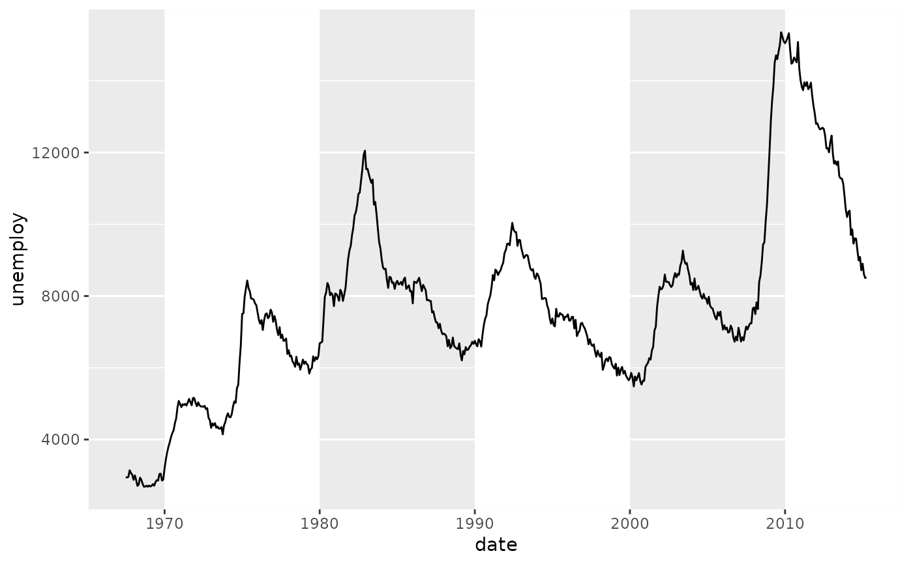
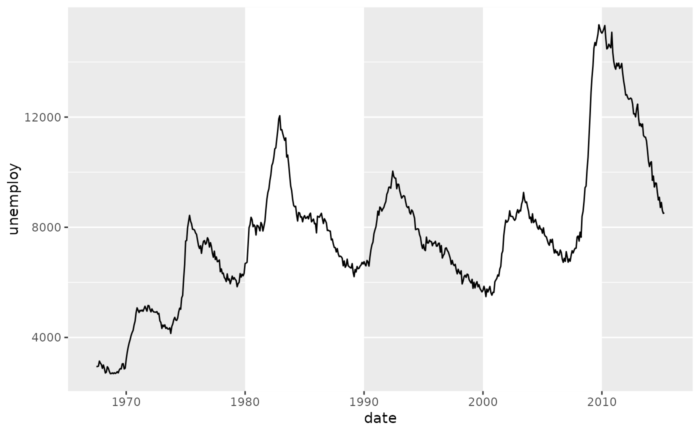
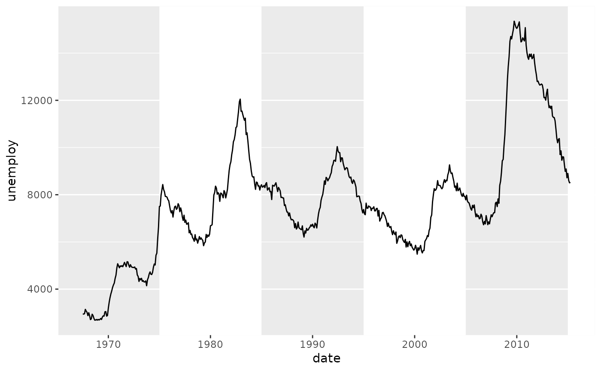
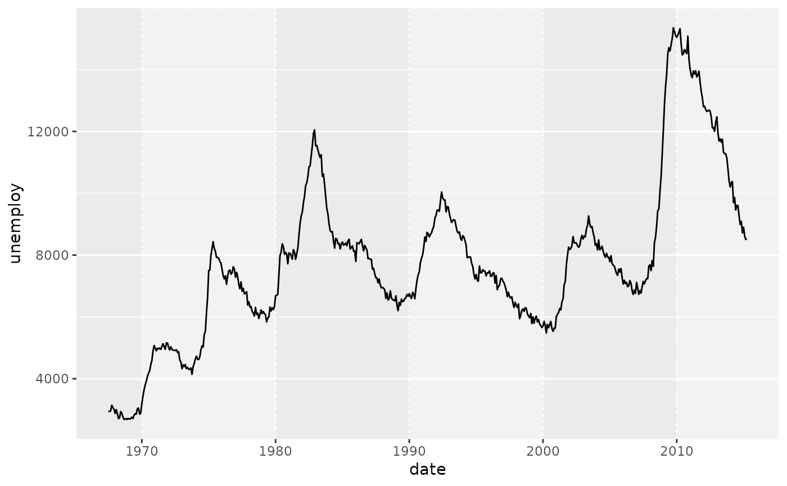
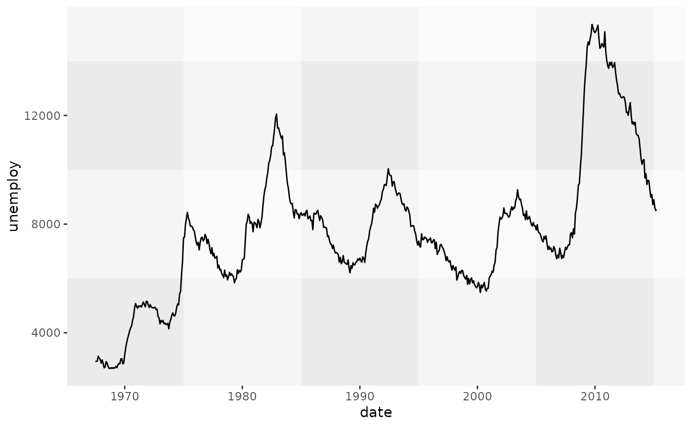

Zebra grid
guide_grid_zebra.RdThis guide will draw the panel grid as alternating stripes, resembling the stripes of a zebra, like the pedestrian crosswalk.
Usage
guide_grid_zebra(
direction = "x",
rect = element_rect(),
rect_x = NULL,
rect_y = NULL,
at = "major",
at_x = NULL,
at_y = NULL,
odd = TRUE,
odd_x = NULL,
odd_y = NULL,
breaks = waiver(),
x_breaks = waiver(),
y_breaks = waiver(),
...
)Arguments
- direction
Either
"x"or"y"or"both"indicating in which direction the zebra stripes should be drawn. If not"both", the orthogonal direction will have regular grid lines.- rect
An
element_rectorelement_blankobject to display the zebra stripes. Internally inherits from thepanel.grid.majortheme setting, where the line'scolourfield becomes the rectangle'sfillfield.- rect_x, rect_y
Inherits from the
rectargument, but for the x and y directions respectively.- at
One of
"major"(default),"minor"or"both"indicating between which breaks to display stripes.- at_x, at_y
Inherits from the
atargument, but for the x and y directions respectively.- odd
A
logical(1)whether to fill the odd stripes (TRUE, default) or the even stripes (FALSE).- odd_x, odd_y
Inherits from the
oddargument, but for the x and y directions respectively.- breaks
The default major breaks specification inherited by the
x_breaksandy_breaksarguments.- x_breaks, y_breaks
Specifications for major breaks. Inherits from the
breaksargument. One of:- ...
Arguments passed on to
guide_gridminor_breaksThe default minor breaks specification inherited by the
x_minor_breaksandy_minor_breaksarguments.x_minor_breaks,y_minor_breaksSpecifications of minor breaks. Inherits from the
minor_breaksargument. One of:
Value
A <Guide> ggproto object that can be given to the
guides() function, or set as the guide argument
in coord_guided().
Details
For discrete scales, the function internally default to placing the major
breaks in the direction dimension in between levels. To restore classic
major breaks at discrete scales, one can set the relevant
breaks_{x/y} = seq_along.
See also
Other grid guide variants:
guide_grid_plus(),
guide_grid()
Examples
# A standard plot
p <- ggplot(economics, aes(date, unemploy)) +
geom_line()
# Adding a zebra grid
p + coord_guided(guide = "grid_zebra")

# Filling the even stripes
p + coord_guided(guide = guide_grid_zebra(odd = FALSE))

# Including the minor breaks for zebra stripes
p + coord_guided(guide = guide_grid_zebra(at = "minor"))

# Customising the look of the stripes
p + coord_guided(guide = guide_grid_zebra(
rect = element_rect(fill = "grey95", colour = "white", linetype = "dotted")
))

# Using zebra stripes as a gingham pattern
p + coord_guided(guide = guide_grid_zebra(direction = 'both', at = "minor")) +
theme(panel.grid.major = element_line(colour = alpha("white", 0.5)))
